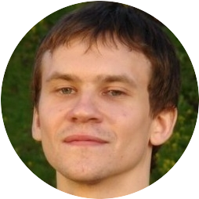

Приложения, которые я сделал:
Родился в г. Павлодар, в 1988 году. Проживаю в Москве, в Измайлово
2005 - 2010 учился в Московском Университете Путей Сообщения
по специальности "Вычислительные машины, системы, комплексы, сети"
Февраль 2013 — Октябрь 2013
SADAD Electronic Payment System
Системный администратор Linux
Сентябрь 2008 — Ноябрь 2009
ЗАО "ПК "Энергосервис"
Системный администратор Windows